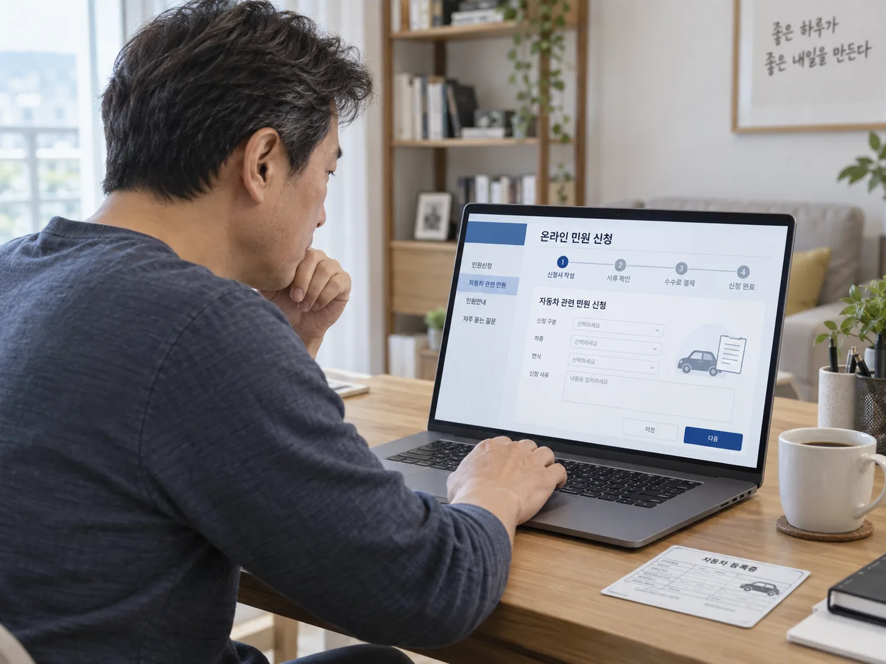
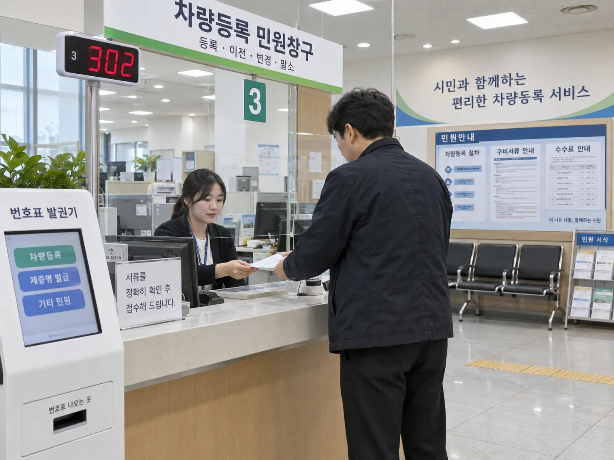
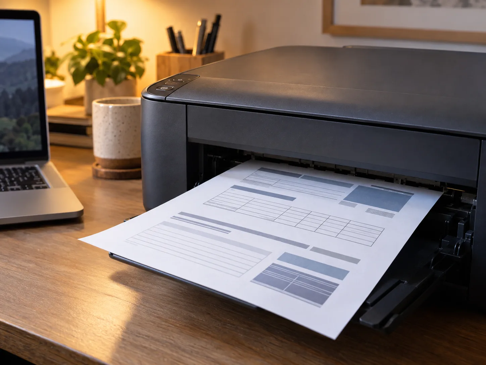
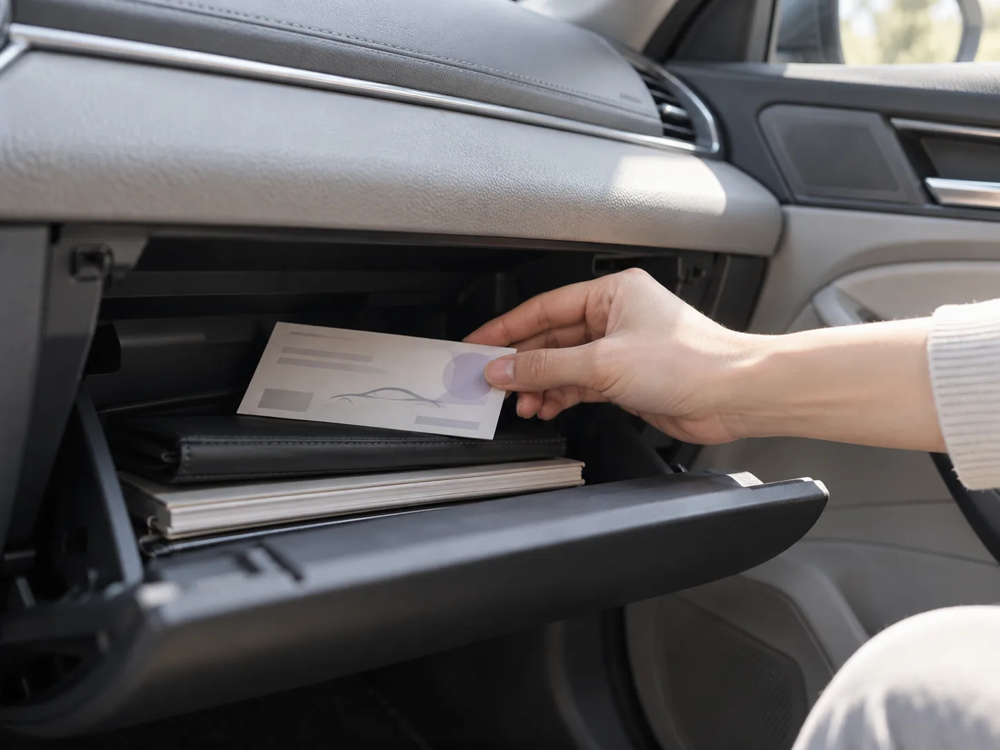

▲ 자동차등록증 재발급은 자동차365나 정부24 홈페이지에서 본인인증만 거치면 서류 없이 신청할 수 있다.
"등록증 하나 다시 뽑는 게 뭐가 어렵겠어." 그렇게 생각하다가도 막상 자동차등록증을 잃어버리거나 구겨져 못 쓰게 되면, 어디서부터 시작해야 할지 막막해지는 경우가 많다. 검색을 해봐도 블로그마다 수수료가 600원이라는 곳도 있고 무료라는 곳도 있어 헷갈린다. 그래서 직접 정부 공식 창구인 자동차민원 대국민포털(자동차365)과 정부24의 안내 내용을 확인하고, 실제 신청 화면 흐름을 따라가며 온라인과 오프라인 재발급 절차를 나란히 비교해봤다. 결론부터 말하면 온라인은 정말 몇 분이면 끝나지만, 몇 가지 함정도 있었다.
왜 재발급이 필요할까 — 분실·훼손·기재사항 오류
자동차등록증은 차량 소유 사실과 제원, 등록번호 등을 증명하는 서류로, 차량 매매·보험 가입·정비소 방문 등에서 요구되는 경우가 많다. 자동차관리법령에 따라 등록증을 분실하거나 헐어 못 쓰게 된 경우, 기재사항이 알아보기 어려울 정도로 훼손된 경우에는 관할 시·군·구(차량등록사업소)에 재발급을 신청해야 한다. 최근에는 실물을 들고 다닐 필요 없이 온라인으로 열람·출력만 해도 되는 경우가 많아 재발급 수요 자체가 예전보다 줄었지만, 계약서 첨부나 관공서 제출용으로 정식 재발급이 필요한 상황은 여전히 존재한다.
온라인 재발급 — 로그인부터 출력까지 실제 순서
온라인 신청은 국토교통부 산하 한국교통안전공단이 운영하는 자동차민원 대국민포털(자동차365, car365.go.kr) 또는 정부24(gov.kr) 두 곳에서 가능하다. 실제 절차를 단계별로 따라가 보면 다음과 같다.
- 로그인 — 공동인증서(구 공인인증서), 금융인증서, 또는 간편인증(카카오·PASS 등) 중 하나로 본인 인증을 한다. 별도 회원가입 없이도 인증서만 있으면 바로 진행된다.
- 메뉴 찾기 — 자동차365는 '민원서비스 > 등록 관련 민원 > 자동차등록증 재발급'으로 들어가고, 정부24는 검색창에 '자동차등록증 재발급'을 입력하면 신청 페이지로 바로 연결된다.
- 서류 확인 — 여기가 온라인 신청의 핵심 장점이다. 본인 명의 차량이라면 별도 첨부서류 없이 본인인증만으로 신청이 가능하다. 차량번호와 재발급 사유만 선택하면 된다.
- 수수료 결제 — 2025년 자동차365 차세대 시스템 통합 이후 온라인 신청 수수료는 무료로 전환됐다. 예전 블로그 글에 남아있는 '600원'은 통합 이전 기준이니 최신 정보로 갱신해서 볼 필요가 있다.
- 수령 방법 — 신청이 완료되면 즉시 화면에 등록증 파일이 뜨고, 그 자리에서 PDF로 저장하거나 프린터로 출력하면 끝난다. 실물 카드형 등록증이 반드시 필요한 상황(중고차 매매계약, 일부 금융기관 제출 등)이라면 온라인 출력본이 인정되는지 먼저 제출처에 확인하는 게 안전하다.
전 과정을 순서대로 밟아보면 인증서 로그인 시간을 빼면 실제 신청·결제·출력은 체감상 3~5분 내외로 끝난다. 다만 자동차365·정부24 포털 이용 가능 시간이 매일 오전 7시~오후 10시(매월 말일은 오전 7시~오후 6시)로 제한돼 있다는 점은 유의해야 한다. 한밤중에 급하게 필요하다면 온라인도 소용이 없다.
오프라인 재발급 — 차량등록사업소 방문 절차
인증서가 없거나, 대리인이 신청해야 하거나, 법인 명의 차량이라면 방문 신청이 필요하다. 접수는 전국 시·군·구 차량등록사업소, 차량등록부서, 읍·면·동 주민센터에서 가능하며, 실제 처리는 관할 차량등록사업소에서 이뤄진다.
| 구분 | 신청 대상 | 필요 서류 |
|---|---|---|
| 본인(개인) 신청 | 차량 소유자 본인 | 신분증, 현장 신청서 작성 |
| 대리인 신청(개인) | 가족·지인 등 위임받은 자 | 대리인 신분증, 소유자 신분증 사본, 도장 날인된 위임장 |
| 법인 차량 – 대표자 방문 | 법인 대표자 | 대표자 신분증, 사업자등록증 사본 또는 법인등기사항증명서 |
| 법인 차량 – 대리인 방문 | 법인 소속 위임 담당자 | 대리인 신분증, 법인인감증명서, 위임장 |
수수료는 수입증지 700원이며 창구에서 현장 결제한다. 처리는 통상 즉시 발급되고, 다른 시·군·구 관할 차량이라도 팩스민원으로 접수하면 3시간 이내 발급이 가능하다는 안내도 있다. 창구 운영시간은 평일 오전 9시~오후 6시(점심시간 낮 12시~오후 1시 제외)가 기본이라 평일 근무 중인 직장인은 시간 맞추기가 쉽지 않다는 점이 온라인 대비 단점이다.
온라인 vs 오프라인, 한눈에 비교
| 항목 | 온라인(자동차365·정부24) | 오프라인(차량등록사업소 등) |
|---|---|---|
| 신청 방법 | 인증서 로그인 후 비대면 신청 | 창구 방문, 신청서 직접 작성 |
| 필요 서류 | 없음(본인인증만) | 신분증, 대리인은 위임장 등 추가 서류 |
| 수수료 | 무료(2025년 통합 이후) | 수입증지 700원 |
| 처리 시간 | 즉시(수 분 내 출력) | 즉시~3시간(팩스민원 기준) |
| 이용 가능 시간 | 매일 07:00~22:00(말일 07:00~18:00) | 평일 09:00~18:00(점심시간 제외) |
| 실물 카드형 등록증 | 즉시 발급 불가, 별도 신청 필요 | 즉시 실물 수령 가능 |
정리하면 급하게 PDF·출력본만 있으면 되는 상황이라면 온라인이 압도적으로 빠르고 무료다. 반면 실물 카드형 등록증이 반드시 필요하거나, 인증서가 없거나, 법인 명의 대리 신청처럼 서류 확인이 까다로운 경우라면 오프라인 방문이 확실하다. 자동차365 공식 안내는 아래에서 직접 확인할 수 있다. 자동차365 재발급 안내 바로가기
재발급 후 보관 — 서류함에 잘 넣어두는 습관
재발급을 받았다면 다음 분실을 막는 게 더 중요하다. 실물 등록증은 차량 내 서류함(글러브박스)에 보관하는 경우가 많은데, 분실·훼손을 반복하지 않으려면 다른 서류와 섞이지 않도록 별도 파일이나 봉투에 정리해 두는 게 좋다. 온라인으로 발급받은 PDF본은 스마트폰이나 클라우드에 함께 저장해두면, 다음에 필요할 때 인증서 로그인만으로 몇 분 안에 다시 출력할 수 있어 훨씬 편하다. 정부24 자동차등록증 재발급 신청 페이지는 아래 링크에서 확인 가능하다. 정부24 자동차등록증 재발급 신청 바로가기

▲ 인증서가 없거나 법인 명의 차량이라면 관할 차량등록사업소나 구청 차량등록부서를 직접 방문해야 한다.
자주 헷갈리는 것 — 등록원부 열람과는 다르다
온라인에서 '자동차등록원부(등본·초본) 발급·열람'과 '자동차등록증 재발급'을 혼동하는 경우가 많다. 등록원부는 소유권 변동 이력 등을 확인하는 열람용 서류로 인터넷 발급 시 원래도 무료였고, 등록증 재발급은 차량에 비치하는 실물 증명서를 다시 만드는 절차다. 둘 다 자동차365·정부24에서 처리 가능하지만 메뉴가 다르므로, 검색할 때 '등록원부'와 '등록증'을 구분해서 찾아야 헛걸음(혹은 헛클릭)을 줄일 수 있다.

▲ 온라인 신청 후 PDF로 저장하거나 그 자리에서 바로 출력하면 재발급 절차가 마무리된다.

▲ 재발급받은 등록증은 다른 서류와 섞이지 않도록 차량 서류함에 따로 정리해두면 다음 분실을 막을 수 있다.